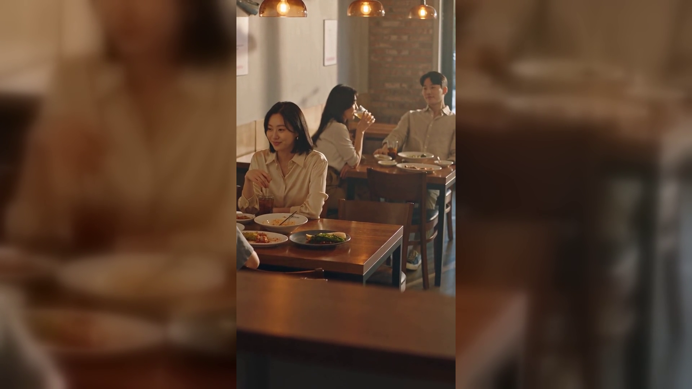

[제목]
중계 보는 저녁, 테이블이 안 도는 이유 4가지 — 저녁 피크 점검
[본문]
다음 달이면 아시안게임입니다. 이번 주 D-30 미디어데이가 열렸고, 개막까지 한 달이 남았습니다.
그런데 매장에서 그 시기가 뜻하는 건 하나입니다. 손님이 오래 앉아 있는 저녁이 늘어난다는 것.
오늘은 저녁 시간 테이블 회전이 느려질 때 무엇부터 보면 되는지 네 가지로 정리했습니다.
[블로그이미지1-주제.png]
결론부터 말하면, 문제는 손님이 오래 앉아 있는 게 아니라 그 사이 주문이 멈추는 것입니다.
회전이 느려지면 대부분 "자리를 빨리 비워야 한다"고 생각합니다. 그런데 계산해 보면 다른 답이 나오는 경우가 많습니다.
■ 1. 회전이 느린 게 정말 문제인지부터 본다
한 테이블이 한 시간에 2만 원을 쓰고 나가는 것과, 두 시간 앉아서 4만 원을 쓰는 것은 같습니다. 자리를 두 번 돌리려면 그 사이 청소와 세팅 시간도 들어갑니다.
그러니 먼저 확인할 것은 회전수가 아니라 테이블당 시간당 매출입니다. 저녁 두 시간 동안 그 자리에서 얼마가 나왔는지 보십시오. 체류가 길어졌는데 금액도 같이 올랐다면 그건 문제가 아닙니다.
숫자가 그대로거나 떨어졌다면, 그때 아래 세 가지를 봅니다.
■ 2. 병목이 주문인지, 조리인지, 계산인지 가른다
느리다는 말은 너무 뭉뚱그려져 있습니다. 저녁 한 시간만 세 군데를 따로 보십시오.
세 군데 중 한 곳만 유독 길 겁니다. 대부분은 첫 번째입니다. 그런데 사장님들이 손대는 곳은 대개 두 번째나 세 번째입니다.
■ 3. 추가 주문이 끊기는 지점을 찾는다
여기가 저녁 매출의 핵심입니다.
손님이 한 잔 더 시키려다 마는 순간이 있습니다. 직원이 안 보이거나, 다들 바빠 보이거나, 부르기 미안한 타이밍입니다. 그 한 번이 지나가면 그 테이블의 추가 주문은 그날 끝납니다.
특히 화면을 보며 앉아 있는 저녁에는 손님이 고개를 돌려 직원을 찾는 일 자체를 잘 안 합니다. 자리에서 시선을 떼지 않으니까요.
그래서 볼 것은 두 가지입니다.
첫째, 저녁 시간에 테이블당 주문이 몇 번 들어오는지. 한 번에 그친다면 추가 주문이 끊기고 있는 것입니다.
둘째, 손님이 직원을 부르지 않고도 주문을 넣을 방법이 있는지. 부르는 단계가 사라지면 망설임도 같이 사라집니다.
[블로그이미지2-제품.png]
■ 자리에서 바로 주문을 받으실 때는
위 3번을 실행하는 방법 중 하나입니다. 테이블오더를 두면 손님이 앉은 자리에서 추가 주문을 넣고, 직원은 홀을 가로지르는 대신 바로 주방으로 갑니다. 누리네트웍스는 포스·테이블오더 설치와 관리를 직접 진행하며, 매장 구조에 맞는지부터 함께 봐 드립니다.
■ 4. 마감 한 시간은 따로 관리한다
마지막 한 시간은 규칙이 다릅니다. 이때는 회전을 늘리는 시간이 아니라 정리하는 시간입니다.
이 한 시간을 정리해 두면 다음 날 아침이 편해집니다.
■ 정리
저녁 장사는 자리를 빨리 비우는 싸움이 아니라, 앉아 있는 동안 주문이 이어지게 하는 일에 가깝습니다.
📞 전화상담 1544-7754
🌐 홈페이지 https://nwpos.co.kr
📷 인스타그램 https://instagram.com/nurinetworkspos
▶️ 유튜브 https://youtube.com/@nurinetworks
[SNS아이콘]
[SNS배너]
※ 매장 규모와 업종에 따라 맞는 방법이 다릅니다. 실제 조건은 계약서와 청구서 원문에서 확인해 주세요.
#테이블회전 #저녁피크 #매장운영 #홀운영 #추가주문 #객단가 #테이블오더 #주문받기 #매장동선 #식당운영 #외식업 #마감관리 #피크타임 #손님체류 #자영업노하우 #창업준비 #개인사업자 #소상공인지원 #결제단말기 #포스기 #키오스크 #토스단말기 #네이버단말기 #카드단말기 #간편결제 #소상공인 #자영업 #매장관리 #누리포스 #누리네트웍스